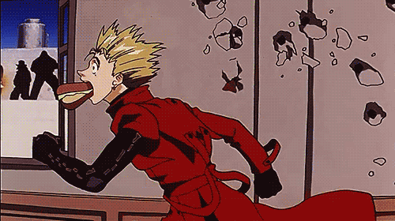

Vash é uma Planta, seres inter-dimensionais que são aproveitados como fonte de força e energia, dando-lhes poderes sobre-humanos e uma capacidade de destruir cidades, adquirindo, assim, o nome de Tufão Humanoide devido a destruição e o caos que o rodeia e, posteriormente, O Homem de 60 Bilhões, por causa do preço de sua cabeça.